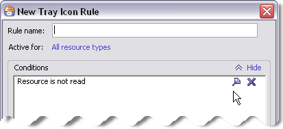

Using Font and Color Rules
Font and Color Rules can help you understand the nature of resources you see listed in various views. For example, if you have set up your own filing system of Categories, you can create Font and Color Rules that show resources in a particular Category with a particular font and/or foreground/ background color.
The font and color rules define the formatting of the Items List.
If you have ever used the rules feature of Microsoft Outlook®, you’ll find that the technique for defining Font and Color Rules is similar defining Rules in Outlook. If you are familiar with how that’s done in Outlook, you should be able to create Font and Color Rules in Omea Reader Omea Pro without difficulty.
Creating a New Font and Color Rule
The Rules Manager dialog (Tools | Manage Rules | Font and Color) enables you to create, modify, and delete Font and Color Rules, and to change the processing order.
There are 4 kinds of criteria that you can specify for Font and Color Rules:
- Resource type(s): The type(s) of resource(s) that the Font and Color Rule applies to.
- Conditions: Some criteria that must be met in order for the rule to apply. For example, a Font and Color Rule might specify that resources must be located in a particular Outlook folder, or must be filed in some particular Category.
- Exceptions: Any exception(s) to the Condition(s). For example, a Condition might specify that resources must be located in a particular Outlook folder, or must be filed in some particular Category. An Exception might specify a particular sender which, if applicable, would prevent the Font and Color Rule from being applied even though the Condition is matched.
- Formatting: What formatting should be applied to resources appearing in the Items List when the item matched the Font and Color Rule’s criteria.
Process for Creating Font and Color Rules
There is no single set of steps for creating a Font and Color Rule, because each one can contain almost any combination of the many possible criteria. The basic steps are:
- Specify what resources the Font and Color Rule applies to. By default, a new Font and Color Rule applies to all supported resource types of the Omea product you have. If you want to limit the Font and Color Rule to just one or two resource types, you must explicitly specify these.
- Define one or more Conditions. (Optional)
- Define one or more Exceptions to the Conditions. (Optional)
- Define the formatting to be applies if the other defined criteria are met.
Quick Video Tutorial:
How to Edit and Create Font and Color Rules
Requires Macromedia Flash Player
Pins
You can now use pins if you want Omea to reuse the conditions which you have once defined in any of the dialogs for defining rules. To pin the condition, just click the Pin button (). Once you pin some condition, it will always appear in the Rules Manager dialog if you click the New button in appropriate tab.
Pined Condition in the New Tray Icon Rule dialog
The prepinned conditions are not intended for existing in Omea “forever” and you can easily delete them by pressing the Delete button in the Conditions field but you may find them rather useful when you become more familiar with the Rules.
If you use some condition or exception often, you can easily pin it for later use by pressing the button in order not to specify it again in the future.
See also: